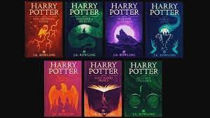
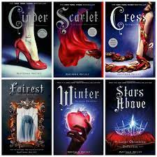
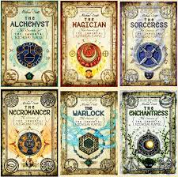
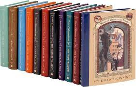

Books series are very enjoyable. Some series are three books, trilogies, and other series have as many as 13 books, each telling the next section of the story. I like reading series becuase it doesn't end at just one book, and the story can be longer, with more opportunity for character growth and new developments. Here are some of my favorite series:
harry potter

- The Sorcerer's stone
- The Chamber of Secrets
- The Prisoner of Azkaban
- The Goblet of Fire
- The Order of the Phoenix
- The Half Blood Prince
- The Deathly Hallows
More about the Harry Potter series
The Lunar Chronicles

- Cinder
- Scarlet
- Cress
- Winter
- Fairest
- Stars Above
More about the Lunar Chronicles series
Alchemyst

- The Alchemyst
- The Magician
- The Sorceress
- The Necromancer
- The Warlock
- The Enchantress
More about the Alchemyst series
Series of Unfortunate Events

- The Bad Beginning
- The Reptile Room
- The Wide Window
- The Miserable Mill
- The Austere Academy
- The Eratz Elevator
- The Vile Village
- The Hostile Hospital
- The Carnivorous Carnival
- The Slippery Slope
- The Grim Grotto
- The Penultimate Peril
- The End
a note: I have not read all of the books in this series.
More about the Series of Unfortunate Events
Home
Back to the Top